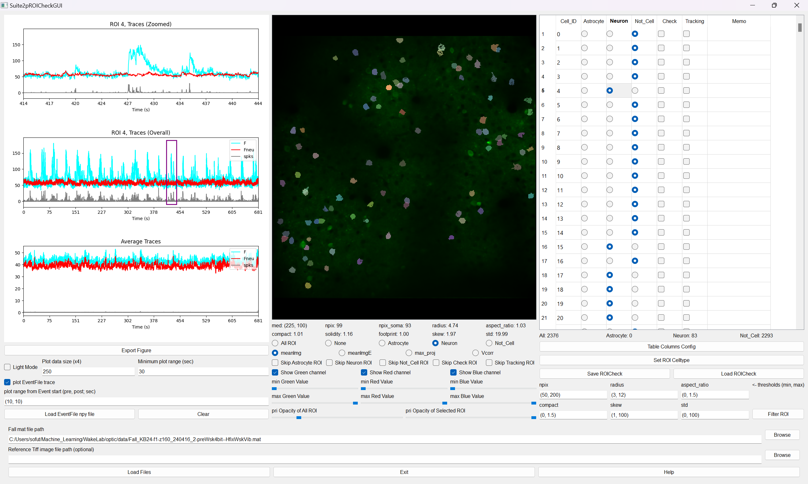
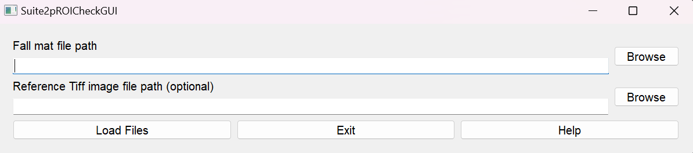
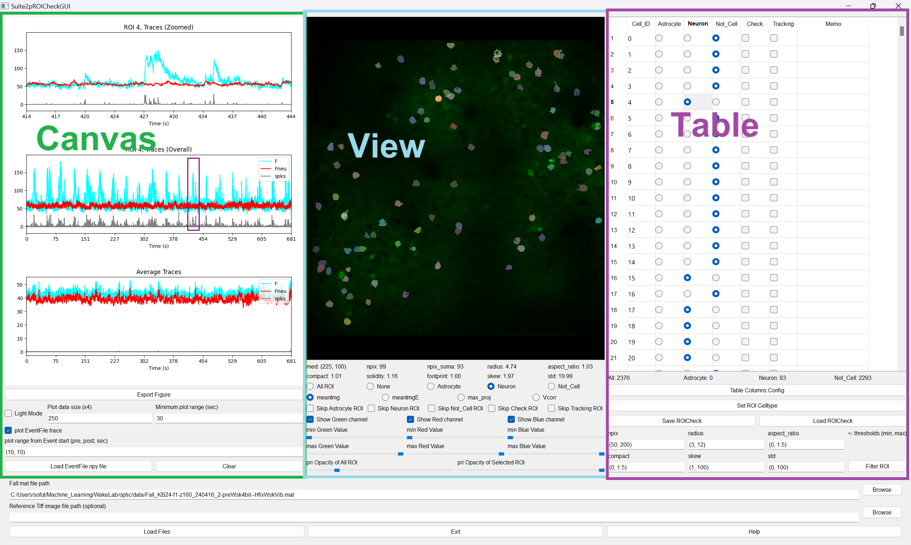
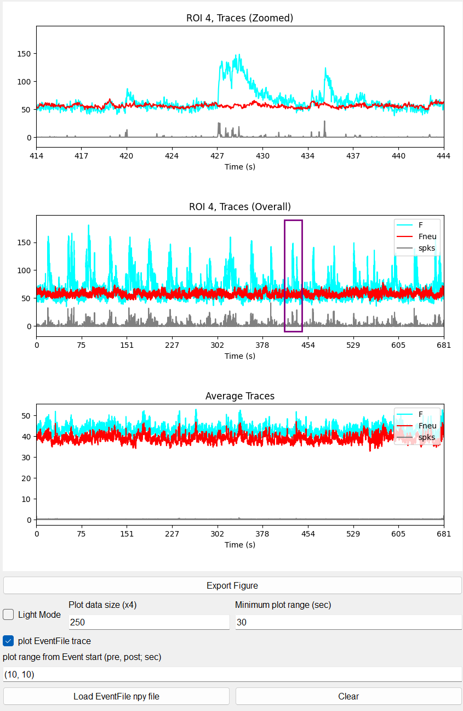
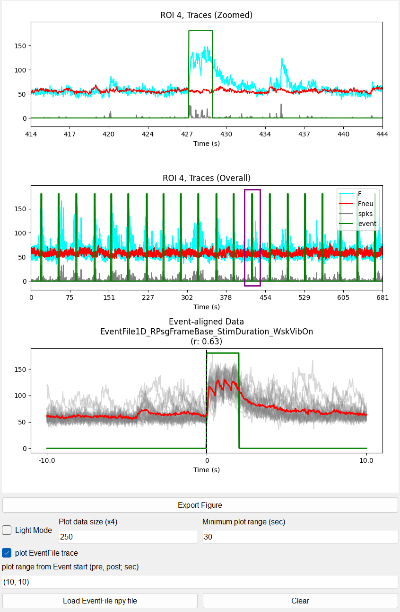
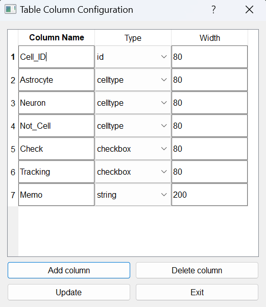
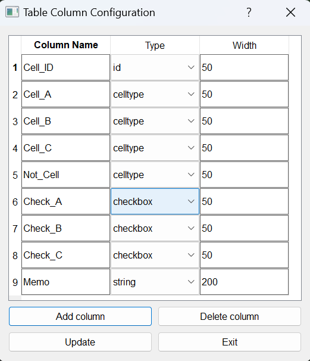

Suite2pROICuration Tutorial
Suite2pROICheck is a specialized tool for quickly and efficiently classifying ROIs extracted by Suite2p into neurons and noise cells. The interface is designed to be intuitive and visually clear. It can be customized to classify cells beyond neurons, allowing users to define their own cell types. By loading event files (.npy) from behavioral experiments performed simultaneously with imaging, users can identify event-responsive cells.
Workflow
Load Fall.mat
Set celltypes with table column config (see custom-table-columns-configuration)
Check ROIs
Save ROICheck.mat file
Input
Before using this application, please prepare Fall.mat, the result file of Suite2p.
(Required): Fall.mat
(Optional): Single tif image
Output
The result of ROI checking is exported as ROICheck~.mat, containing the ROI celltype information and storing multiple results. For downstream analysis, please check the notebook for analysis. If you want to track ROIs between different dates, please refer to the Suite2pROITracking Tutorial. - ROICheck_{name_of_the_Fall_file}.mat
Load Fall.mat file
Fall mat file path (Required):
Push the “browse” button and choose the Fall.mat file. Suite2pROICheck supports 2-channel imaging Fall.mat but does not support multi-plane imaging data.
Reference tif image file path (Optional):
Push the “browse” button and choose a single XY tif image file. If you capture a reference image as a tif file, you can use it with the blue-channel image.
Check ROIs
Suite2pROICheck consists of three GUI sections: Canvas, View, and Table.
Canvas Section
Top Axis
Displays zoomed traces (F, Fneu, spks) of the selected ROI.
Mouse drag: Move display area
Mouse scroll: Zoom in/out
Minimum Plot Range: Set minimum display time in seconds
Middle Axis
Displays overall traces (F, Fneu, spks) of the selected ROI.
Mouse click: Center top axis view on clicked position
Bottom Axis
Displays average traces (F, Fneu, spks) across all ROIs. When an event file is loaded, displays event-aligned F trace of the selected ROI.
Event File
Event File: The
.npyfile containing experimental events (e.g.[0, 0, 1, 1, 1, 0, 0, ...]).Plot Range: Sets display range (seconds) before/after each event onset (all events are overlaid).
r: Pearson correlation coefficient between trace and event.
Light Mode
Reduces CPU load by downsampling plot points. When set to 250, plots 1,000 points (4× the value).
Top, Middle, Bottom Axis
Event File Plot
View Section
View
Displays ROIs of Fall.mat with the chosen ROI highlighted.
Mouse click: Select the closest ROI after applying skip conditions.
ROI Property (Details derived from the Suite2p documentation):
med: (y,x) center of cell
npix: Number of pixels in ROI
npix_soma: Number of pixels in ROI’s soma
radius: Estimated radius from a 2D Gaussian fit to the mask
aspect_ratio: Ratio between major and minor axes of the 2D Gaussian fit
compact: How compact the ROI is (1 for a disk; >1 means less compact)
solidity: (Possibly similar to compact)
footprint: Spatial extent of the ROI’s functional signal, calculated via thresholding and averaging distance from center
skew: Skewness of the neuropil-corrected fluorescence trace
std: Standard deviation of the neuropil-corrected fluorescence trace
ROI Display Setting
Options to display all ROIs, none, or only specific cell types.
Background Image Display Setting
Switch among background images: meanImg, meanImgE, max_proj, and Vcorr.
Skip ROIs with choosing
Option to skip ROIs that are already sorted (e.g. skip Neuron when focusing on Astrocyte and Not_Cell).
Image Contrast
Green: Primary channel background image contrast.
Red: Secondary channel background image contrast (if applicable).
Blue: Reference tif image contrast (if set).
ROI Opacity
Adjust the opacity for all or the selected ROI via sliders.
Table Section
Table
Displays columns:
id,celltype,check, andstring.celltype: Set via radio buttons.
check and string: Optional (for checkbox and memo).
Table Columns Config
Customize table columns using the section custom-table-columns-configuration.
Set ROI celltype
Change the celltype and check values for multiple ROIs (e.g. from index_min to index_max) simultaneously. Example: Set Neuron for ROIs 100–300, skipping those with “Check” marked.
Filter ROI
Filter ROIs based on parameters: npix, radius, aspect_ratio, compact, skew, and std. ROIs outside threshold ranges will be switched to Not_Cell.
Save/Load ROI Check result
Save progress as ROICheck.mat files and load them to resume ROI checking. For downstream analysis, see the Jupyter notebooks.
Key Operation of Table
The following key operations apply to table columns ["Cell_ID", "Astrocyte", "Neuron", "Not_Cell", "Check", "Tracking", "Memo"]:
Z: Choose Astrocyte
X: Choose Neuron
C: Choose Not_Cell
V: Check/Uncheck Check
B: Check/Uncheck Tracking
Y/H: Move to previous/next ROI with the celltype selected in the “ROI Display Setting”
U/J: Move to previous/next ROI with the same celltype as the current ROI
I/K: Move to previous/next ROI whose “Check” is checked
O/L: Move to previous/next ROI whose “Check” is unchecked
Up arrow: Move one row up
Down arrow: Move one row down
Custom Table Columns Configuration
The default columns configuration is:
["Cell_ID", "Astrocyte", "Neuron", "Not_Cell", "Check", "Tracking", "Memo"]
but you can customize them using the Table Columns Config feature in the Table section.
Table Columns Config
Column Name
You can edit the name of a table column freely, but note the following:
WARNING: Do not include spaces; use underscores (_) instead. Example: Use
cell_Ainstead ofcell A. Also, ensure that the last celltype column is named Not_Cell. For example: Instead of[Astrocyte, Not_Cell, Neuron], use[Neuron, Astrocyte, Not_Cell].
Type
id: ROI number starting from 0 (uneditable).celltype: Only one option selectable (radio buttons).checkbox: Boolean value (0/1).string: Memo text (use only English or numbers).
Width
The column width can be adjusted by dragging.
Below are examples:
Default Configuration:
Customized Configuration:

Key Operation of Table (Alternative)
For table columns ["Cell_ID", "Cell_A", "Cell_B", "Cell_C", "Not_Cell", "Check_A", "Check_B", "Check_C", "Memo"], the following operations apply:
Z: Choose Cell_A
X: Choose Cell_B
C: Choose Cell_C
V: Choose Not_Cell
B: Check/Uncheck Check_A
N: Check/Uncheck Check_B
M: Check/Uncheck Check_C
Up arrow: Move one row up
Down arrow: Move one row down